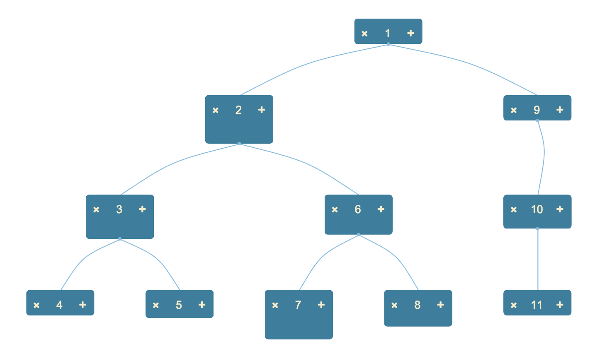

The Hierarchical layout uses the Walker algorithm to position Nodes in a hierarchy, oriented either vertically or horizontally.
The classic use cases for this layout are such things as a family tree or org chart.

{String|Node} rootNode Optional. Defines the node to use as the root of the tree. This may be provided either as a node id or as a Node object.
If this parameter is not specified and multipleRoots is not false then the layout uses the result(s) of the getRootNode function; otherwise
it uses the first Node found in the dataset.
{Function} getChildEdges This function is at the core of how the Hierarchical layout traverses the dataset. It is defined as:
getChildEdges = function({Node} node, {Toolkit} toolkit):Edge[];
Its purpose is to return a list of Edge objects for the given Node, which Edges define the connections from this Node to what should be considered its children. The default implementation of this is:
function(node, toolkit) {
return toolkit.getAllEdgesFor(node, function(e) {
return e.source === node || (params.ignorePorts !== true && e.source.getNode && e.source.getNode() === node);
});
}
Which basically says, get all the Edges for which this Node (or Port, if connecting via Ports is enabled) is the source.
Custom implementations of this function can, for example, test the type of Edges, to exclude certain types from determining
the structure of the hierarchy:
function(node, toolkit) {
return toolkit.getAllEdgesFor(node, function(e) {
return e.data.type !== "FLOATING" && e.source === node || (params.ignorePorts !== true && e.source.getNode && e.source.getNode() === node);
});
}
Here we test each Edge to see if it is of type FLOATING, and if so, we do not return it. The result would be that the hierarchical
layout would be determined by the other Edges; any Edges of this type would still be drawn, of course. They would simply be painted to/from
wherever in the hierarchy the two end Nodes were located.
function(toolkit) {
if (params.multipleRoots !== false) {
return toolkit.filter(function(o) {
return (o.objectType === "Node" && o.getTargetEdges().length == 0 && o.group == null) ||
(o.objectType === "Group" && o.getTargetEdges().length == 0);
}).getAll();
}
else {
return (_super.adapter.getNodeCount() > 0) ? _super.adapter.getNodeAt(0) : null;
}
}
...when multipleRoots is enabled (which it is by default) then this function search for all Nodes/Groups that are not
targets of any Edges. When multipleRoots is set to false, the function returns the first Node in the dataset.
{Boolean} multipleRoots Optional, defaults to true. If false, multiple roots are not supported, and assuming you have
not overriden getRootNdoe, the layout uses the first Node found in the dataset (otherwise it still uses the result of
your getRootNode function).
{Number[]} padding Optional [ x, y ] array of values to use as the padding between elements.
{String} orientation Optional, defaults to "vertical". Valid values are "vertical" and "horizontal".
{Boolean} compress Optional, defaults to false. If true, the layout will use a regular spacing between each node and
its parent. Otherwise the layout pushes each node down by the maximum size of some element in that level of the hierarchy.
For complex hierarchies in which any given node may have children, that is better. But for simple hierarchies, setting compress can give good results.
Here we tell the Surface what the ID of the node to use as the root is, and we specify some padding and a horizontal
orientation.
toolkit.render({
container:"someElement",
layout:{
type:"Hierarchical",
parameters:{
rootNode:"rootNodeId",
padding:[ 50, 50 ],
orientation:"horizontal"
}
}
});
Taken from the discussion above: only Edges that are not of type FLOATING will determine the structure of the hierarchy.
toolkit.render({
container:"someElement",
layout:{
type:"Hierarchical",
parameters:{
getChildEdges:function(node, toolkit) {
return toolkit.getAllEdgesFor(node, function(e) {
return e.data.type !== "FLOATING" && e.source === node || (params.ignorePorts !== true && e.source.getNode && e.source.getNode() === node);
});
}
}
}
});
Return all Nodes whose type is ROOT to use as the roots of the hierarchy.
toolkit.render({
container:"someElement",
layout:{
type:"Hierarchical",
parameters:{
getRootNodes:function(toolkit) {
return toolkit.filter(function(o) {
return (o.objectType === "Node" && o.type === "ROOT")
}).getAll();
}
}
}
});
See a demonstration of this layout in single root mode here, and in multiple root mode here.